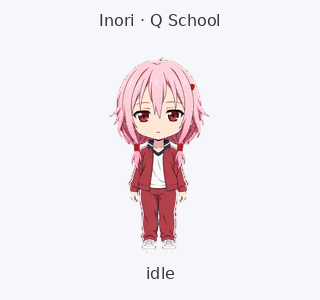
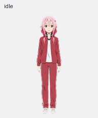
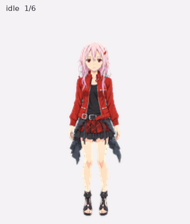
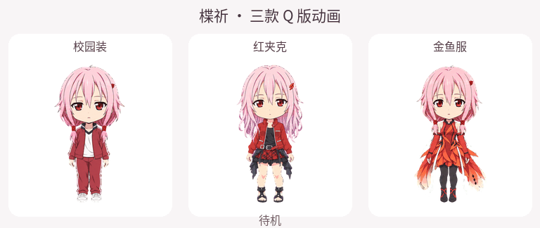

楪祈·金鱼服 Q 版
Inori · Q Goldfish
独立 ZIP · Pet packageinori-q-goldfish五套楪祈同人宠物，私有预览与独立下载。
Five Inori fan-art companions, with private previews and packages.
Inori · Q Goldfish
独立 ZIP · Pet packageinori-q-goldfish
Inori · Q School
独立 ZIP · Pet packageinori-q-schoolInori · Q Red Jacket
独立 ZIP · Pet packageinori-q-red-jacket
Inori · School
独立 ZIP · Pet packageinori-school
Inori · Red Jacket
独立 ZIP · Pet packageinori-red-jacket现有对比预览，保留原始 GIF。Original comparison GIF, preserved unchanged.
